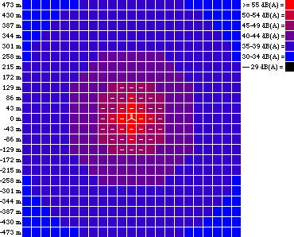

Sound
from Wind Turbines
Noise
is a Minor Problem Today
It is interesting to note that the sound emission levels for
all new Danish turbine designs tend to cluster around the same
values. This seems to indicate that the gains due to new designs
of e.g. quieter rotor blade tips are spent in slightly increasing
the tip speed (the wind speed measured at the tip of the rotor
blade), and thus increasing the energy output from the machines.
 In the guided tour section on Wind
Turbine Design we have explained how turbines today are engineered
to reduce sound emissions.
In the guided tour section on Wind
Turbine Design we have explained how turbines today are engineered
to reduce sound emissions.
 It thus appears that noise is not a major
problem for the industry, given the distance to the closest neighbours
(usually a minimum distance of about 7 rotor diameters or 300
m = 1000 ft. is observed).
It thus appears that noise is not a major
problem for the industry, given the distance to the closest neighbours
(usually a minimum distance of about 7 rotor diameters or 300
m = 1000 ft. is observed).
 The concepts of sound perception and measurement
are not widely known in the public, but they are fairly easy
to understand, once you get to grips with it. You can actually
do the calculations yourself in a moment.
The concepts of sound perception and measurement
are not widely known in the public, but they are fairly easy
to understand, once you get to grips with it. You can actually
do the calculations yourself in a moment.
Planning
Wind Turbine Installation in Regard to Sound

Fortunately, it is usually reasonably easy to predict the
sound effect from wind turbines in advance. On one of the following
pages you may even try for yourself, using the Sound
Map Calculator, which was used to draw the picture.
 Each square measures 43 by 43 metres, corresponding
to one rotor diameter. The bright red areas are the areas with
high sound intensity, above 55 dB(A). The dashed areas indicate
areas with sound levels above 45 dB(A), which will normally not
be used for housing etc. (We get to the explanation of the sound
level and dB(A) in a moment).
Each square measures 43 by 43 metres, corresponding
to one rotor diameter. The bright red areas are the areas with
high sound intensity, above 55 dB(A). The dashed areas indicate
areas with sound levels above 45 dB(A), which will normally not
be used for housing etc. (We get to the explanation of the sound
level and dB(A) in a moment).
 As you can see, the zone affected by sound
extends only a few rotor diameters' distance from the machine.
As you can see, the zone affected by sound
extends only a few rotor diameters' distance from the machine.
Background
Noise: Masking Noise Drowns out Turbine Noise
No landscape is ever completely quiet. Birds and human activities
emit sound, and at winds speeds around 4-7 m/s and up the noise
from the wind in leaves, shrubs, trees, masts etc. will gradually
mask (drown out) any potential sound from e.g. wind turbines.
 This makes it extremely difficult to measure
sound from wind turbines accurately. At wind speeds around 8
m/s and above, it generally becomes a quite abstruse issue to
discuss sound emissions from modern wind turbines, since background
noise will generally mask any turbine noise completely.
This makes it extremely difficult to measure
sound from wind turbines accurately. At wind speeds around 8
m/s and above, it generally becomes a quite abstruse issue to
discuss sound emissions from modern wind turbines, since background
noise will generally mask any turbine noise completely.
The
Influence of the Surroundings on Sound Propagation
Sound reflection or absorption from terrain and building surfaces
may make the sound picture different in different locations.
Generally, very little sound is heard upwind of wind turbines.
The wind rose is therefore important
to chart the potential dispersion of sound in different directions.
Human
Perception of Sound and Noise
Most people find it pleasant listen to the sound of waves at
the seashore, and quite a few of us are annoyed with the noise
from the neighbour's radio, even though the actual sound level
may be far lower.
 Apart from the question of your neighbour's
taste in music, there is obviously a difference in terms of information
content. Sea waves emit random "white" noise, while
you neighbour's radio has some systematic content which your
brain cannot avoid discerning and analysing. If you generally
dislike your neighbour you will no doubt be even more annoyed
with the noise. Sound experts for lack of a better definition
define "noise" as "unwanted sound".
Apart from the question of your neighbour's
taste in music, there is obviously a difference in terms of information
content. Sea waves emit random "white" noise, while
you neighbour's radio has some systematic content which your
brain cannot avoid discerning and analysing. If you generally
dislike your neighbour you will no doubt be even more annoyed
with the noise. Sound experts for lack of a better definition
define "noise" as "unwanted sound".
 Since the distinction between noise and sound
is a highly psychological phenomenon, it is not easy to make
a simple and universally satisfactory modelling of sound phenomena.
In fact, a recent study done by the Danish research institute
DK Teknik seems to indicate that people's perception of noise
from wind turbines is governed more by their attitude to the
source of the noise, rather than the actual noise itself.
Since the distinction between noise and sound
is a highly psychological phenomenon, it is not easy to make
a simple and universally satisfactory modelling of sound phenomena.
In fact, a recent study done by the Danish research institute
DK Teknik seems to indicate that people's perception of noise
from wind turbines is governed more by their attitude to the
source of the noise, rather than the actual noise itself.

|
Back | Home
| Forward |
© Copyright 2000 Soren Krohn.
All rights reserved.
Updated 9 September 2000
http://www.windpower.org/tour/env/sound.htm